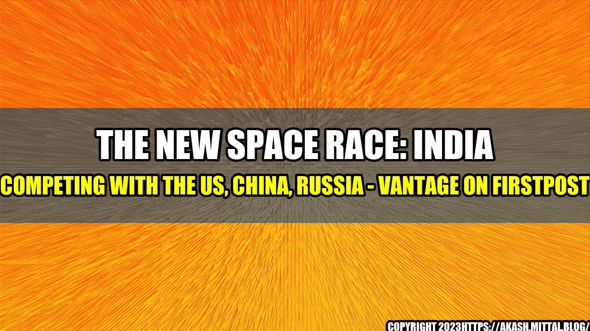

The New Space Race - India Competing with The US, China, Russia

It was a dream come true for 104 satellites to be launched into space in one go, and India made it possible with PSLV-C37 in February 2017. What began as a mere aspiration of late Dr Vikram Sarabhai, the father of the Indian space programme, a few decades ago, has today put India alongside major players in the space race. India's maiden interplanetary mission to Mars, Mangalyaan, which costed $74 million and was completed in a record time of 15 months, achieved the milestone of entering the Martian orbit in September 2014.
The Indian Space Research Organisation (ISRO) has come a long way since its humble beginnings in 1969, when it only employed 10 scientists. Today, with a staff of over 16,000, ISRO has accomplished several missions, including remote sensing, satellite launch, and interplanetary exploration.
ISRO has also collaborated with other countries. The South Asia Satellite, also known as GSAT-9, was launched in May 2017 with the purpose of providing South Asian Association for Regional Cooperation (SAARC) member nations communication assistance. This was a significant moment for India, not only because it was the largest satellite ISRO has ever built but also because it was a clear indication of India's increasing space dominance in the region.
India's Rivals in the Space Race
India's achievements in space are making the US, China and Russia uncomfortable. Although these countries are the front runners in the space race, India is catching up fast.
- US: The US has been at the forefront of space exploration for years. The National Aeronautics and Space Administration (NASA) has long been a pioneer in space technology, with notable accomplishments such as the first human landing on the moon in 1969. NASA's current focus is on deep space exploration, with plans to send humans to Mars in the 2030s.
- China: In 2003, China sent an astronaut into space, making it only the third country, after Russia and the US, to accomplish human spaceflight. China's space programme has since grown exponentially, with plans to establish a permanent space station by 2022 and to send a manned mission to the moon by 2036.
- Russia: Russia has a long and illustrious history in space exploration, with notable achievements such as the launch of the first satellite, Sputnik 1, in 1957. Russia is currently collaborating with the European Space Agency to send a mission, known as Exomars, to explore the Martian surface.
The Significance of the New Space Race
The new space race is not just about exploring the final frontier, it has more to it than meets the eye. Here are a few quantifiable examples of the significance of the new space race:
- Space is now being viewed as the new strategic frontier by nations. Countries are looking at developing space-based capabilities for communication, navigation, and surveillance. This is of great significance as these capabilities can be used for both military and civilian purposes. The increasing emphasis on space-based capabilities has led to a new kind of arms race, wherein nations are competing to develop systems to disable or destroy satellites.
- Space exploration is no longer restricted to government agencies like NASA and ISRO. Private companies like SpaceX and Blue Origin are making significant strides in the space industry. SpaceX has ushered in the era of reusable rockets, which has drastically reduced the cost of space exploration. Private companies like these are also competing for contracts from government agencies like NASA, making the space industry more competitive.
- The new space race has led to the development of new technologies, which have applications beyond space. For instance, the development of lightweight materials for use in spacecraft has led to the development of lightweight materials for use in the automobile and aviation industries.
Conclusion
The new space race is not just a competition between nations, but it is also a quest to achieve new scientific advancements and technological innovations. India's recent accomplishments in space have put it alongside major players in the space race. Here are three key takeaways:
- India has made significant strides in the space industry in a relatively short amount of time. The development of space-based capabilities has put India alongside major players in the space race.
- Space exploration is now being viewed as the new strategic frontier, and countries are competing to develop space-based capabilities. The increasing emphasis on space-based capabilities has led to a new kind of arms race.
- The new space race has led to the development of new technologies, which have applications beyond space. The evolution of the space industry, driven primarily by private firms, has made it more competitive and innovative.
References
Hashtags
- #NewSpaceRace
- #IndiaSpaceDominance
- #ISRO
SEO Keywords
- New Space Race
- India Competing with The US, China, Russia
- ISRO
- Space-Based Capabilities
Article Category
Science & Technology
Curated by Team Akash.Mittal.Blog
Share on Twitter Share on LinkedIn